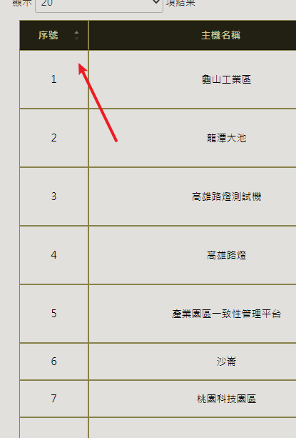
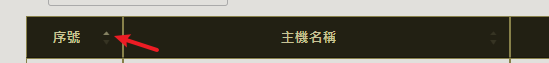
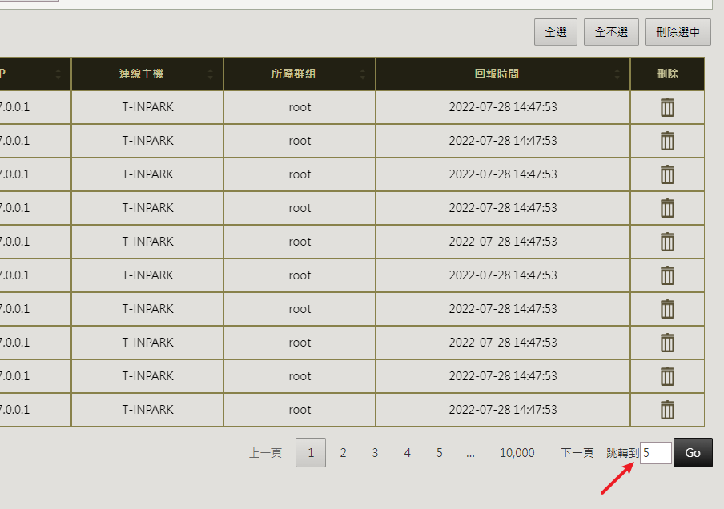
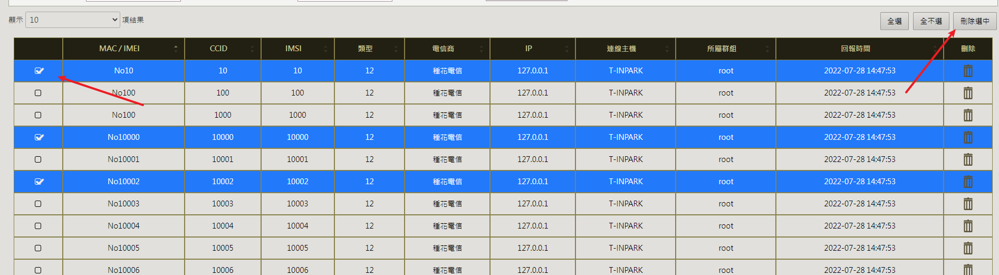
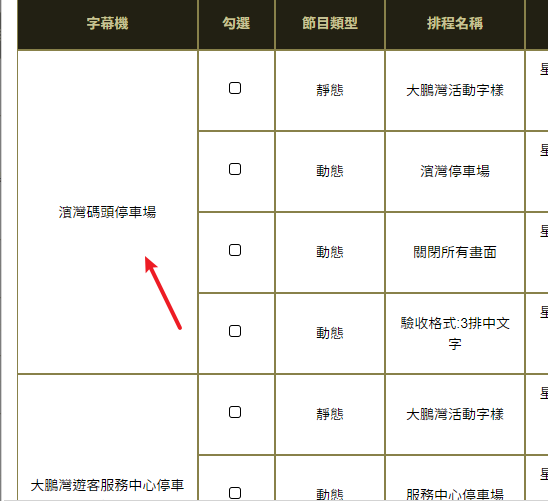

DataTables實用code合籍
序號、跳轉到、選取、後端分頁等等
DataTables小技巧
DataTables是前端非常好用的表格套件
https://datatables.net/manual/
自動序號

{
width: "2%",
data: null,
defaultContent: '',
orderable: false,
title: "序號",
render: function(data, type, full, meta) {
return meta.row + 1 + meta.settings._iDisplayStart;
}
}
i18n中文化
搭配官方的 : http://cdn.datatables.net/plug-ins/1.12.1/i18n/
language: {
url: "/scripts/DataTables-1.12.1/zh-HANT.json",
infoFiltered: "",
},
防止預設的排序

order : []
格式化時間
{
data: "time",
title: "時間",
render: function(data) {
return data ? dayjs(data).format('YYYY-MM-DD') : "";
},
}
綁定特殊動作
- 比如說要設定某個onclick事件並傳入參數，如果參數很單純(例如純數字的id)那可以簡單的用render，例如:
- 這樣是把參數一起寫死到html的元素中了，按F12就可以直接看到
render: function(data) {
return '<i class="fa-solid fa-trash-can fa-2xl" onclick="deleteById(' + data + ')"></i>';
},
- 但如果要傳入的東西比較複雜(例如是一個多層的json object)，那用createdCell再用JQuery的.click之類的去做綁定
{
width: "3%",
data: "id",
orderable: false,
title: "刪除",
createdCell: function(td, cellData, rowData, row, col) {
let icon;
if (rowData.departureTime) {
icon = '<i class="fa-solid fa-trash-can fa-2xl ban-icon" title="已送出的維修單"></i>';
} else {
icon = $('<i class="fa-solid fa-trash-can fa-2xl"></i>').click(function() {
toggleDeleteDialog(rowData);
});
}
$(td).html(icon);
}
}
跳轉到

drawCallback: function(setting) {
var _this = $(this);
var tableId = _this.attr('id');
var pageDiv = $('#' + tableId + '_paginate');
pageDiv.append('跳轉到<input id="' + tableId +
'_gotoPage" type="text" style="height:28px;line-height:28px;width:40px;"/>' +
'<a class="paginate_button" aria-controls="' + tableId + '" tabindex="0" id="' +
tableId + '_goto">Go</a>')
$('#' + tableId + '_goto').click(function(obj) {
var page = $('#' + tableId + '_gotoPage').val();
var thisDataTable = $('#' + tableId).DataTable();
var pageInfo = thisDataTable.page.info();
if (isNaN(page)) {
$('#' + tableId + '_gotoPage').val('');
return;
} else {
var maxPage = pageInfo.pages;
var page = Number(page) - 1;
if (page < 0) {
page = 0;
} else if (page >= maxPage) {
page = maxPage - 1;
}
$('#' + tableId + '_gotoPage').val(page + 1);
thisDataTable.page(page).draw('page');
}
})
},
自訂按鈕

- 這邊有搭配select插件
columns: [{
width: "5%",
data: null,
defaultContent: '',
orderable: false,
className: 'select-checkbox'
}, {
...
select: {
style: 'multi'
},
...
buttons: [{
extend: 'csv',
className: "force-hide",
text: '匯出當前頁',
bom: true,
title: "<spring:message code='燈控器管理'/>",
exportOptions: {
columns: [1, 2, 3, 4, 5, 6, 7, 8, 9],
},
}, {
text: '全選',
action: function() {
table.rows().select();
}
}, {
text: '全不選',
action: function() {
table.rows().deselect();
}
}, {
text: '刪除選中',
action: function() {
let idList = [];
table.rows({
selected: true
}).data().map(obj => {
idList.push(obj.id)
})
if (idList.length < 1) {
alertMessage("未選中任何項目")
return;
}
confirmMessage("目前選中 " + idList.length + " 項，確定要執行批量刪除?", function(confirm) {
if (confirm) {
let result = postDelete(idList);
if (result != "FAIL") {
table.rows('.selected').remove().draw(false);
}
}
})
}
}],
後端分頁
前端一頁1000筆以上效率就不高了，最好就要考慮後端分頁
serverSide: true, // 後端分頁
ajax: {
type: "post",
url: ems.parseUrl("file") + "/getMainList",
contentType: "application/json",
dataType: "json",
data: function(data) {
// 獲取當前的排序
let orderBy = "";
let ascend = "";
if (data.order[0]) {
orderBy = data.columns[data.order[0].column].data;
ascend = data.order[0].dir == "asc";
}
var d = {
"orderNumber": $("#sf-orderNumber").val(),
...自訂的參數
"currentPage": (data.start / data.length) + 1,
"pageSize": data.length,
"orderBy": orderBy, // 排序的欄位
"ascend": ascend
}
return JSON.stringify(d);
},
error: function(jqXHR, ajaxOptions, thrownError) {
console.log("獲取清單失敗");
},
dataSrc: function(json) {
if (json.status == "SUCCESS") {
json.recordsFiltered = json.result.count; // 指定記錄數
json.recordsTotal = json.result.totalPage; // 指定頁數
return json.result.list;
}
return "";
},
},
自訂處理中遮罩
mainTable = $('#mainTable').on('processing.dt', function(e, settings, processing) {
if (processing) { // 自訂處理中遮罩
showLoading();
} else {
$.unblockUI();
}
}).DataTable({
dom: 'lBfrtip', // 布局
processing: false, // 處理中指示
...
自訂前端搜尋
- search必須要是true才可以使用前端搜尋的API
column要給name這樣比較好定位搜尋，否則用順位只要一變動就會大亂
{
data : "imei",
name : "imei",
title : "imei",
}
/** 前端搜尋 */
function frontEndSearch() {
let imei=$("#sf-imei").val();
MAIN_TABLE.column("imei:name").search(imei).draw();
}
/** 前端搜尋還原 */
function frontEndClear() {
$("[id^=sf-]").each(function() {
this.value = '';
this.checked = false;
});
MAIN_TABLE.search('').columns().search('').draw();
}
前端搜尋某時間區間
/** 前端搜尋時間 */
$.fn.dataTable.ext.search.push(
function(settings, data, dataIndex) {
let from = $("#time_from").val();
let to = $("#time_to").val()
if (from == "" && to == "") return true;
var min = dayjs(from).unix();
var max = dayjs(to).unix();
var date = dayjs(data[7]).unix();
if (!(Number.isNaN(min) && Number.isNaN(max)) && min <= date && max >= date) {
return true;
}
if (min <= date && Number.isNaN(max)) return true;
if (max >= date && Number.isNaN(min)) return true;
return false;
}
);
初始化完成後綁定事件
initComplete: function(setting) {
跨行合併相同值
例如第1筆資料的’群組’是A，第2筆也是A，在’群組’這欄位就2行合併

drawCallback : function(setting) {
mregeRow(0); // 合併目標欄位(豎的)
$(".remove").hide();
$(".marge").css("vertical-align", "middle");
},
/*
* 要合併單元格，需要存儲兩個參數，
* 1. 開始合併的單元格的第一行的行數
* 2. 要合併的單元格的個數
**/
function mregeRow(v) {
tr = $("#checkTable tr").length;// 獲取當前表格中行數
var mark = 0; //要合併的單元格數
var index = 0; //起始行數
//判斷 若只有一行數據，就是表頭，則不做調整
if (tr > 1) {
//var i=1 比較當前的tr和上一個tr的值
for (var i = 0; i < tr; i++) {
var ford = $("#checkTable tr:gt(0):eq(" + i + ") td:eq(" + parseInt(v) + ")").text();
//根據下標獲取單元格的值
// tr:gt(0) 從下標0 開始獲取
// tr:gt(0):eq( i ) :i 標識 當前行的下標 ，0 開始
// td:eq(0) 當前行的第一個單元格，下標從0開始
var behind = $("#checkTable tr:gt(0):eq(" + (parseInt(i) + 1) + ") td:eq(" + parseInt(v) + ")").text();
if (ford != "" && ford == behind) {
$("#checkTable tr:gt(0):eq(" + (parseInt(i) + 1) + ") td:eq(" + parseInt(v) + ")").attr("class", "remove");
mark = mark + 1;
} else if (ford != behind) {
index = i - mark;
$("#checkTable tr:gt(0):eq(" + index + ") td:eq(" + parseInt(v) + ")").attr("rowspan", mark + 1);//將當前的行加入屬性rowspan，合併 mark+1行
$("#checkTable tr:gt(0):eq(" + index + ") td:eq(" + parseInt(v) + ")").attr("class", "marge");
//rowspan 列上橫跨， colspan 行上橫跨
//後面的參數，表示橫跨的單元格個數，
//合併單元格就是將其他的單元格隱藏（hide）,或刪除（remove）。
//將一個單元格的rowspan 或colsspan 加大
mark = 0;
}
}
}
}
/**
* 全局ajax設定，阻止重複提交
*/
$.ajaxPrefilter(function(options, originalOptions, jqXHR) {
var key = options.url;
if (!pendingRequests[key] && key.indexOf('.html') == -1) {
pendingRequests[key] = jqXHR;
} else if (key.indexOf('.html') == -1) {
jqXHR.abort(); // 放棄晚觸發的重複提交
//pendingRequests[key].abort(); // 放棄先觸發的提交
}
var complete = options.complete;
options.complete = function(jqXHR, textStatus) {
pendingRequests[key] = null;
if ($.isFunction(complete)) {
complete.apply(this, arguments);
}
};
});
上次修改於 2022-08-25